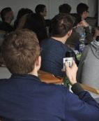
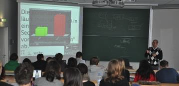
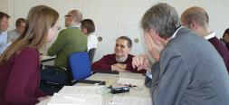
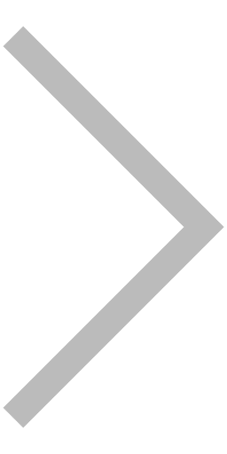
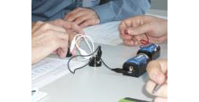
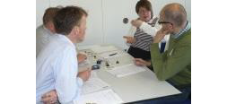

Methoden:
- Problem-basiertes und Projekt-oriertiertes Lernen
- Just-in-Time Teaching
- Peer Instruction
Medien:
- Lernplattform Moodle
- Clicker
- Grafiktablet
- Visualizer
1
Fragestellung zu fachlichem Thema2
Einzelabstimmung via Clicker3
Diskussion in der Gruppe4
Erneute Abstimmung
5
Anzeigen der Umfrageergbnisse
6
Aufdecken der Lösung
Problem-basierte Fragestellung in der Lehre...


...regen zum Tüfteln an,

...und auch zum Diskutieren.